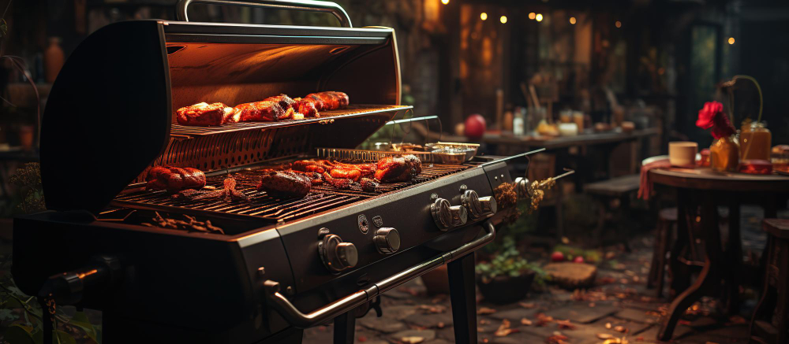
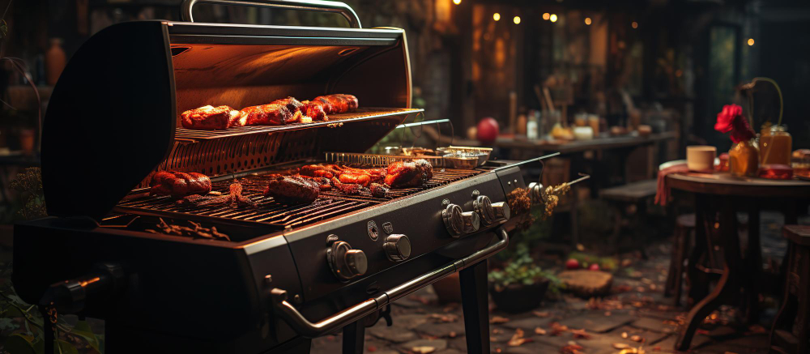

Skills in Motion: Explore My Web Applications
REACT TYPESCRIPT
NODE EXPRESS
VUE PYTHON
"Every problem is a gift; without problems, we would not grow." - Tony Robbins
-
{% for post in site.posts %}
-
Crafting Digital Experience: Transforming Ideas into Code

 

🔥 "From 0-1, to web design fun, making the internet a more awesome place for everyone" 🔥
My name is Patt Sookmark
I'm a seasoned Full-stack Front-end Software Engineer passionate about creating engaging and intuitive user experiences. With React JS -TypeScript JS and Node JS expertise, and more, I deliver fast, mobile-first, responsive web applications.After a decade in finance and audit, where I honed my skills in financial entrepreneurship and industrial economics, I pursued my dream of owning a catering business. Although it closed in 2020, the experience fueled my commitment to leveraging technology for small businesses.
In my software engineering journey, I contribute to story mapping and collaborate with backend teams, defining API contracts for a startup. Currently an intern, I receive mentorship and code reviews, gaining valuable insights into best practices.
My side project involves building a word game app to teach my daughter, Thais. This not only strengthens my UX/UI design skills but also delves into backend development using databases and AWS S3.
With a diverse educational background, including a degree in Accounting and IT Audit, an MBA in Financial Entrepreneurship, and a BA in Industrial Economics, I bring a wealth of knowledge to my work. As the former owner of Tapestry Catering, I prioritized exceptional customer experiences, creating a streamlined kitchen operations app and expanding to 3 brand identities.
As an Internal Auditor, I provided valuable insights through financial, operational, and IT audits. I am passionate about developing innovative solutions that empower small businesses to thrive in a competitive market.
I am currently based in the vibrant city of Denver, where I find inspiration for both my professional and personal pursuits. Outside the coding, I enjoy nature's beauty through hiking in the surrounding Denver. Exploring the local culinary scene is another passion of mine, and you can often find me cafe-hopping to discover new flavors and atmospheres. I also enjoy expressing my creativity in the kitchen, whipping up delightful dishes for friends and family. Beyond that, I have a fondness for digital art and find joy in bringing my ideas to life through drawings and illustrations.
.
TECHNOLOGY I KNOW
- JAVASCRIPT
- REACT JS
- TYPESCRIPT JS
- CSS, STYLED COMPONENTS
- MUI, PRIMEREACT
- MOCHA, CHAI
- CYPRESS
FRONT END
- ILLUSTRATOR
- CANVA
- MIRO
- FIGMA
- JIRA
- GIT/GitKRAKEN
- SCRUM/AGILE
DESIGN TOOLS
OTHER TOOLS
- NODE JS/EXPRESS JS
- POSTGRES
- PYTHON
- AWS IAM
- DOCKER
- S3 BUCKET